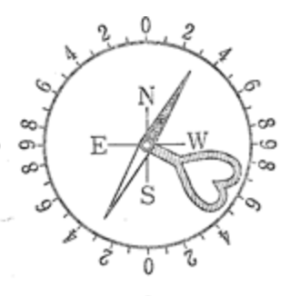
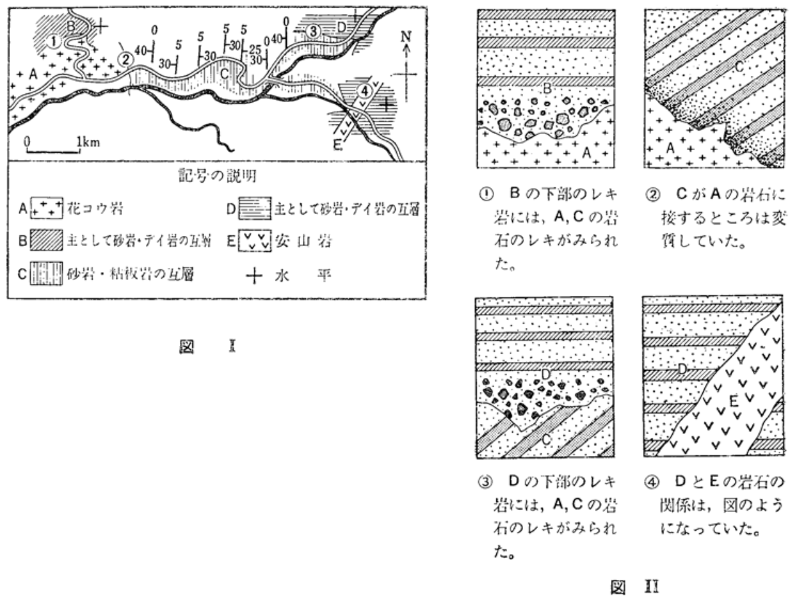

Question 1 (用語)
次の文章の空欄を埋めなさい。
地表の岩石が崩壊・分解する現象を（ 風化 ）という。
水が凍結して体積が増えることで岩石を割る作用を（ 物理的 ）風化といい、寒冷地で進みやすい。一方、雨水などが岩石を溶かす作用を（ 化学的 ）風化といい、高温多湿な地域で進みやすい。
後者の例として、石灰岩地帯に見られる（ カルスト ）地形がある。
川が山地から平野に出る場所では、流速が落ちて土砂が扇形に広がり（ 扇状地 ）ができる。
河口付近では（ 三角州 ）が形成される。また、土地の隆起などにより、かつての谷底が階段状に残された地形を（ 河岸段丘 ）という。
海岸において、沿岸流により砂がくちばし状に伸びた地形を（ 砂嘴 ）という。
正解: 風化 / 物理的 / 化学的 / カルスト / 扇状地 / 三角州 / 河岸段丘 / 砂嘴
Question 2 (クリノメーター)
地層の走向・傾斜を測定するクリノメーターについて答えよ。
(1) 上図の a ～ d の中から正しいあて方を選べ。
・走向を測るときのあて方: （ a ）
・傾斜を測るときのあて方: （ d ）

(2) 走向を測定したところ、目盛りが上図のようになった（N極がE側の30度を指している）。
この地層の走向はいくらか。
選択肢: [ ア: 北30°東 / イ: 北30°西 / ウ: 南30°東 ]
答え: （ イ ）
解説:
(1) 走向は長辺を水平にあてて測ります(a)。傾斜は文字盤を立てて直角の辺をあてて測ります(d)。
(2) 地質用クリノメーターはEとWの配置が逆になっています。針が「E」側にあるということは、実際の方位は「西(West)」に偏角しています。よって「北30°西」が正解です。
Question 3 (地層の解釈)

(1) スケッチ①では、B層の下部にA層の岩石の礫（レキ）が含まれていた。
このような、不整合面の直上にある礫岩を特に（ 基底礫岩 ）という。
(2) スケッチ①と②の情報から、A層、B層、C層を形成された順に古いものから並べよ。
答え: （ C ）→（ A ）→（ B
）
解説:
スケッチ②より、C層がA層に接する部分が変質しています（接触変成作用）。これはC層にA層（火成岩）が貫入したことを示すため、C→Aの順です。
スケッチ①より、B層の中にA層・C層の礫が含まれています。これはB層が堆積する前にA・C層が削られたことを示すため、Bが最も新しいです。
Question 4 (生命の進化)
次の文章の空欄を埋めなさい。
① 先カンブリア時代
約27億年前頃から、海中で光合成を行う（ シアノバクテリア ）が繁栄し、その痕跡はストロマトライトに残されている。
彼らが放出した酸素により、やがて上空に（ オゾン層 ）が形成され、生物が陸上へ進出できる環境が整った。
② 古生代・中生代
古生代のカンブリア紀には、硬い殻や眼を持つ生物が一斉に出現した。これを（ カンブリア爆発 ）という。
脊椎動物では（ 両生類 ）が最初に上陸した。
中生代は温暖な気候で、（ 恐竜 ）やアンモナイトが繁栄した。
正解: シアノバクテリア / オゾン層 / カンブリア爆発 / 両生類 / 恐竜
Question 5 (地質年代)
(1) 地層ができた時代を決定するのに役立つ化石を（ 示準化石 ）という。
この化石に適しているのは、「生存期間が（ 短い ）」ことと、「生息範囲が（ 広い
）」ことである。
(2) 放射年代の計算
ある火成岩中の「親元素」と、崩壊してできた「娘元素」の比率を調べた。
・親元素の半減期: 4億年
・岩石中の比率: 親元素 : 娘元素 ＝ 1 : 3
この岩石が形成されたのは、今から（ 8 ）億年前である。
解説 (2):
親:娘 = 1:3 なので、全体を4としたとき親元素は「1/4」残っています。
1 → 1/2 (1回目) → 1/4 (2回目) となるため、半減期が2回経過しています。
4億年 × 2回 ＝ 8億年前 となります。